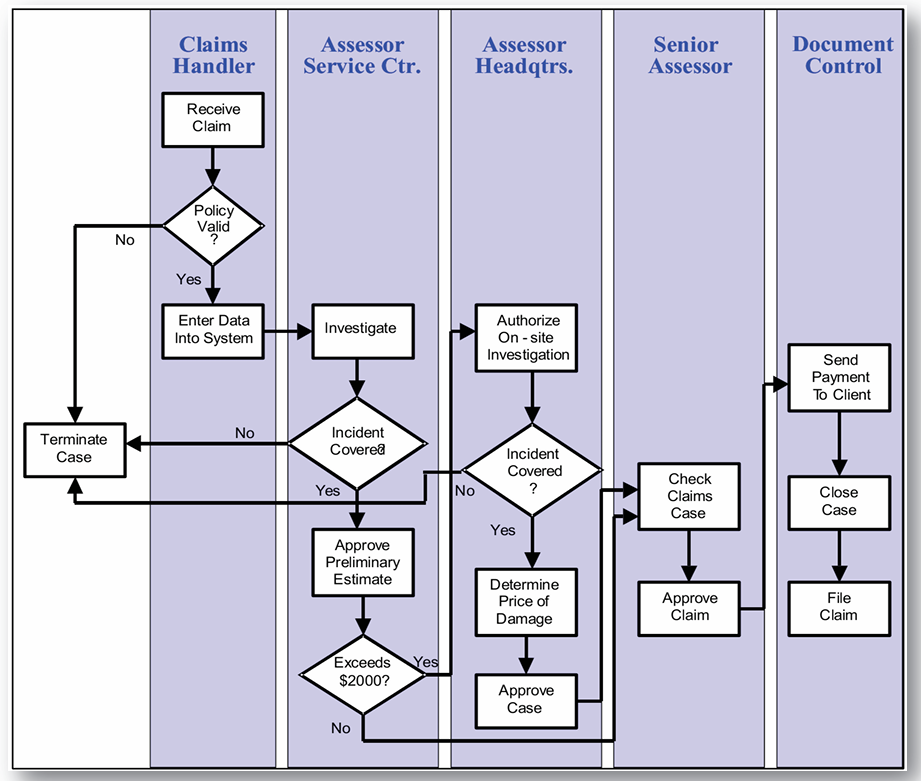

Modelling
{kind=link}


- in BPMN is clearer with no ambiguituis

- 5 instances = 5 tokens proccessed concurrently
- 10 tokens are the ones that arrives

- given a number of tokens that arrives to a node, pass to the next one the rounded number → should try to not make a token disappear/appear, thus balance
BP Simulations


The terminate event, like the end event, deletes a token when it arrives. However,
it not only deletes this single token, but it also terminate the entire process,
any other tokens in the entire process are also removed at the same time.
Simulations
Simulation involves modeling the underlying state of the system. Ideally, you should be able to look into the simulation and observe properties that you would also see if you looked into the original system

Difference from simulation diagram and emulation diagram
- one is declarative and the other is imperative
- The emulation explicitly specifies the sequence of activities
To simulate parallel events, I need more resources for that pool

Note that the simulator engine may perform an unbalanced allocation of Pool resources to tasks when the number of tokens is low (a few units) → eg. before all Task2 and then all Task3, leading to an increase of completion time
For more complex layout, simulation of parallel paths in the same scenario is not allowed by the simulator → we need to create an emulation diagram, a diagram which is purposely created by considering the limitation of a simulation engine
- Emulation is the process of mimicking the outwardly observable behavior to match an existing system without describe it internally exactly

- With the emulation, the total duration is shorter, because there are no synchronization constraints between Task2 and Task3 at the merging node
When assigning multiple instances of a resource (lane), the execution of single tasks
(eg Task4) is also parallelized, because the simulator allocates the available resource to all tasks
In order to decide which tasks have to be parallelized, we can define two levels of
parallelism:
- A mirror resource, equipped with more instances
- A separate base resource, with a single instance

I can emulate no-peak scenarios with a timer to have fixed interarrival time
- the time should be subtracted from the total duration